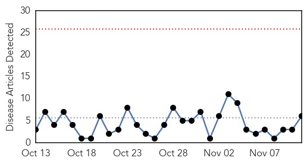
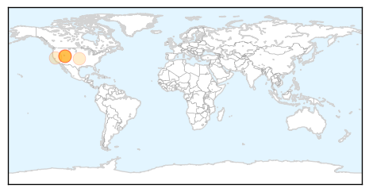
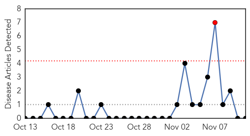

Hepatitis
30-Day Web Trend
0 alerts, 0 warnings

30-Day Twitter Trend
0 alerts, 0 warnings

Article Locations
Article Confidences

Top Articles:
- 0.959
- Hepatitis C exposure news: Nearly 5,000 patients in Utah hospital possibly exposed
- 0.787
- Info, updates on hep C vital to the community
- 0.768
- No positive hepatitis C results in first 1,100 McKay-Dee tests
- 0.625
- $14 Million PCORI Research Grant Awarded to Montefiore and Einstein to Fund Hepatitis C Research
- 0.603
- Tapeworm cancer cells found in Colombian man
- 0.502
- Over 1000 test results back, no sign of Hepatitis C at McKay-Dee
Top Tweets:
-
No tweets found for Nov 11, 2015
Mumps
30-Day Web Trend
1 alerts, 0 warnings

30-Day Twitter Trend
0 alerts, 0 warnings

Article Locations

Article Confidences

Top Articles:
-
No articles found for Nov 11, 2015
Top Tweets:
-
No tweets found for Nov 11, 2015